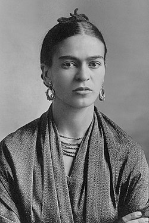

<html>
    <head>

    </head>
    <body style="background-color: antiquewhite;">
        <footer>
            <strong><h1>ფრიდა კალო ბიოგრაფია</h1></strong>
           
            <p>მაგდალენა კარმენ ფრიდა კალო ი კალდერონი (ესპ. Magdalena Carmen Frieda Kahlo y Calderon), დაიბადა მშობლების სახლში კოიოაკანში, <br>
                რომელიც იმჟამად მცირე ქალაქი იყო მეხიკოს შემოგარენში. მამამისი, გილერმო კალო, გერმანულ-ებრაული წარმოშობის მხატვარი და ფოტოგრაფი, <br>
                მექსიკაში ორადეადან, (რუმინეთი), გადმოსახლდა. ექვსი წლის ასაკში ფრიდას პოლიომიელიტი გაურთულდა,<br>
                 რის შედეგადაც მას კიდურების სიმახინჯე შერჩა (მარცხენა ფეხი გაცილებით სუსტი ჰქონდა ვიდრე მარჯვენა). მიუხედავად ამისა, თავისი <br>
                 მეომარი სულითა და უდრეკი ხასიათის წყალობით მან ამ ნაკლის გადალახვა მოახერხა.<br>

                1925 წელს ტრამვაისა და ავტობუსის, რომელშიც ფრიდა იმყოფებოდა, შეჯახების შედეგად ამოვარდნილმა რკინის ხელსაჭიდმა მილმა მას ხერხემალი<br>
                 გაუტეხა და საშვილოსნოში გაუარა. თუმცა ფრიდა გადაურჩა ამ ჭრილობებს და საბოლოოდ სიარულიც შეძლო, მაგრამ პერიოდულმა აუტანელმა <br>
                 ტკივილებმა მას მთელი ცხოვრება გაუმწარა. ამ ინციდენტის შემდეგ, ფრიდა სამედიცინო კარიერას თავს ანებებს და ფერწერას იწყებს.<br>
                  ტილოები, რომლითაც ის საკუთარ განცდებს გამოხატავდა, ხშირად მაყურებელს შოკში აგდებს ქალთა ტკივილისა და მძიმე ცხოვრების <br>
                  გაზვიადებული ასახვით. მისი 143 ფერწერული ტილოდან ორმოცდათხუთმეტი ავტოპორტრეტია და ასახავს პერსონალურ სიმბოლიზმს <br>
                  მწვავე ანატომიური მინიშნებებით. მასზე ასევე ზეგავლენა მოახდინა მექსიკელ ინდიელთა კულტურამ, რაც მის ნამუშევრებში მკვეთრი <br>
                  ფერებითა და რეალიზმისა და სიმბოლიზმის ნარევით გამოისახა.<br>
                  <br>
                  <br>
                ფრიდა კალო დიეგო რივერასთან ერთად, 1932<br>
                მისმა ნამუშევრებმა მექსიკელი მხატვრის და მიურალისტის, დიეგო რივერას ყურადღება მიიქცია, რომელთანაც ფრიდამ მოგვიანებით <br>
                იქორწინა, დაშორდა, და შემდეგ ხელმეორედ იქორწინა. წყვილის ქორწინება ძალზედ არასტაბილური და მძიმე გამოდგა. მათი უთანხმოებები<br>
                 ხშირად ფიზიკურ შეხლა-შემოხლაში გადადიოდა. პირველი ქორწინებისას რივიერა 42 წლის იყო, ის ფრიდაზე გაცილებით მაღალი იყო და მასზე <br>
                 სამჯერ მეტს იწონიდა. ფრიდამ ერთხელ აღნიშნა კიდეც, რომ მან ცხოვრებაში ორი უბედური შემთხვევა გადაიტანა, ერთი ავტობუსში, მეორის <br>
                 მიზეზი კი დიეგო იყო.<br>
                
                თავად აქტიურ კომუნისტს, ფრიდა კალოს, როგორც ამბობენ, რომანი ჰქონდა ლევ ტროცკისთან, რომელიც მეხიკოში მის სახლში იქნა მოკლული <br>
                სტალინის აგენტების მიერ 1940 წელს. რამდენიმე ხანში ტროცკის მოკვლიდან, ფრიდამ უარყო მისი ყოფილი მეგობარი და სტალინს მიემხრო. ის <br>
                აგრეთვე ხშირად აქებდა მაოს, ხოლო ჩინეთს "სოციალიზმის ახალ იმედს" უწოდებდა. მისი სახლი მორთული იყო სიციალისტური ხელოვნების<br>
                 ნიმუშებით და ასევე კარლ მარქსის, ფრიდრიხ ენგელსის, სტალინისა და მაო ძედუნის პორტრეტებით.<br>
                
                მიუხედავად იმისა, რომ ფრიდა კალოს ნამუშევრები ხშირად მოიხსენიება როგორც სიურეალისტური და ისინი რამდენიმეჯერ <br>
                ევროპელ სიურეალისტებთან ერთადაც იქნა გამოფენილი, თვით ფრიდა ხშირად უარყოფდა მის ამგვარ კლასიფიკაციას. ფრიდას<br><br>
                 გატაცებამ ქალური თემებით და მისმა ხაზგასმულმა ექსპრესიულობამ ის ფემინისტური კულტის ფიგურად აქცია მე-20 საუკუნის ბოლო ათწლეულებში.<br>

                
                დოკუმენტურ/ბიოგრაფიული ფილმი სახელწოდებით „ფრიდა კალო“ გამოშვებულ იქნა გერმანიაში 1982 წელს. 1984 წელს რეჟისორმა პოლ დე ლუკმა <br>
                გადაიღო ფილმი „ფრიდა, ნატურალესა ვივა“ (Frida, naturaleza viva), რომელშიც ფრიდას როლს ოფელია მედინა თამაშობს. 2002 წელს კი, <br>
                სტუდია მირამაქსმა (Miramax) გადაიღო მხატვრული ფილმი სახელწოდებით "ფრიდა", სალმა ჰაიეკით მთავარ როლში.<br></p>
        </footer>
    </body>
</html>